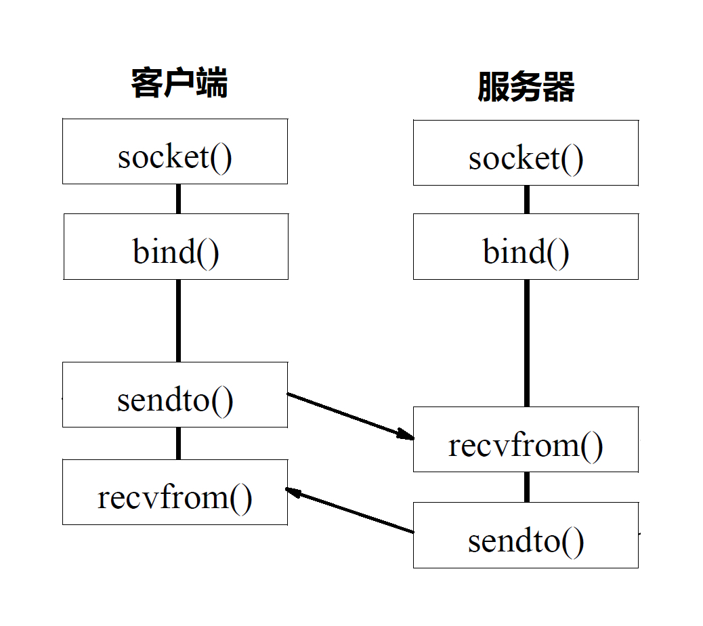

13 讲套接字 Socket：Talkischeap,showmethecode¶
前面讲完了 TCP 和 UDP 协议，还没有上手过，这一节咱们讲讲基于 TCP 和 UDP 协议的 Socket 编程。
在讲 TCP 和 UDP 协议的时候，我们分客户端和服务端，在写程序的时候，我们也同样这样分。
Socket 这个名字很有意思，可以作插口或者插槽讲。虽然我们是写软件程序，但是你可以想象为弄一根网线，一头插在客户端，一头插在服务端，然后进行通信。所以在通信之前，双方都要建立一个 Socket。
在建立 Socket 的时候，应该设置什么参数呢？Socket 编程进行的是端到端的通信，往往意识不到中间经过多少局域网，多少路由器，因而能够设置的参数，也只能是端到端协议之上网络层和传输层的。
在网络层，Socket 函数需要指定到底是 IPv4 还是 IPv6，分别对应设置为 AF_INET 和 AF_INET6。另外，还要指定到底是 TCP 还是 UDP。还记得咱们前面讲过的，TCP 协议是基于数据流的，所以设置为 SOCK_STREAM，而 UDP 是基于数据报的，因而设置为 SOCK_DGRAM。
基于 TCP 协议的 Socket 程序函数调用过程¶
两端创建了 Socket 之后，接下来的过程中，TCP 和 UDP 稍有不同，我们先来看 TCP。
TCP 的服务端要先监听一个端口，一般是先调用 bind 函数，给这个 Socket 赋予一个 IP 地址和端口。为什么需要端口呢？要知道，你写的是一个应用程序，当一个网络包来的时候，内核要通过 TCP 头里面的这个端口，来找到你这个应用程序，把包给你。为什么要 IP 地址呢？有时候，一台机器会有多个网卡，也就会有多个 IP 地址，你可以选择监听所有的网卡，也可以选择监听一个网卡，这样，只有发给这个网卡的包，才会给你。
当服务端有了 IP 和端口号，就可以调用 listen 函数进行监听。在 TCP 的状态图里面，有一个 listen 状态，当调用这个函数之后，服务端就进入了这个状态，这个时候客户端就可以发起连接了。
在内核中，为每个 Socket 维护两个队列。一个是已经建立了连接的队列，这时候连接三次握手已经完毕，处于 established 状态；一个是还没有完全建立连接的队列，这个时候三次握手还没完成，处于 syn_rcvd 的状态。
接下来，服务端调用 accept 函数，拿出一个已经完成的连接进行处理。如果还没有完成，就要等着。
在服务端等待的时候，客户端可以通过 connect 函数发起连接。先在参数中指明要连接的 IP 地址和端口号，然后开始发起三次握手。内核会给客户端分配一个临时的端口。一旦握手成功，服务端的 accept 就会返回另一个 Socket。
这是一个经常考的知识点，就是监听的 Socket 和真正用来传数据的 Socket 是两个，一个叫作 监听 Socket，一个叫作 已连接 Socket。
连接建立成功之后，双方开始通过 read 和 write 函数来读写数据，就像往一个文件流里面写东西一样。
这个图就是基于 TCP 协议的 Socket 程序函数调用过程。

说 TCP 的 Socket 就是一个文件流，是非常准确的。因为，Socket 在 Linux 中就是以文件的形式存在的。除此之外，还存在文件描述符。写入和读出，也是通过文件描述符。
在内核中，Socket 是一个文件，那对应就有文件描述符。每一个进程都有一个数据结构 task_struct，里面指向一个文件描述符数组，来列出这个进程打开的所有文件的文件描述符。文件描述符是一个整数，是这个数组的下标。
这个数组中的内容是一个指针，指向内核中所有打开的文件的列表。既然是一个文件，就会有一个 inode，只不过 Socket 对应的 inode 不像真正的文件系统一样，保存在硬盘上的，而是在内存中的。在这个 inode 中，指向了 Socket 在内核中的 Socket 结构。
在这个结构里面，主要的是两个队列，一个是 发送队列，一个是 接收队列。在这两个队列里面保存的是一个缓存 sk_buff。这个缓存里面能够看到完整的包的结构。看到这个，是不是能和前面讲过的收发包的场景联系起来了？
整个数据结构我也画了一张图。
{kind=link}
基于 UDP 协议的 Socket 程序函数调用过程¶
对于 UDP 来讲，过程有些不一样。UDP 是没有连接的，所以不需要三次握手，也就不需要调用 listen 和 connect，但是，UDP 的的交互仍然需要 IP 和端口号，因而也需要 bind。UDP 是没有维护连接状态的，因而不需要每对连接建立一组 Socket，而是只要有一个 Socket，就能够和多个客户端通信。也正是因为没有连接状态，每次通信的时候，都调用 sendto 和 recvfrom，都可以传入 IP 地址和端口。
这个图的内容就是基于 UDP 协议的 Socket 程序函数调用过程。

{kind=link}
服务器如何接更多的项目？¶
会了这几个基本的 Socket 函数之后，你就可以轻松地写一个网络交互的程序了。就像上面的过程一样，在建立连接后，进行一个 while 循环。客户端发了收，服务端收了发。
当然这只是万里长征的第一步，因为如果使用这种方法，基本上只能一对一沟通。如果你是一个服务器，同时只能服务一个客户，肯定是不行的。这就相当于老板成立一个公司，只有自己一个人，自己亲自上来服务客户，只能干完了一家再干下一家，这样赚不来多少钱。
那作为老板你就要想了，我最多能接多少项目呢？当然是越多越好。
我们先来算一下理论值，也就是 最大连接数，系统会用一个四元组来标识一个 TCP 连接。
服务器通常固定在某个本地端口上监听，等待客户端的连接请求。因此，服务端端 TCP 连接四元组中只有对端 IP, 也就是客户端的 IP 和对端的端口，也即客户端的端口是可变的，因此，最大 TCP 连接数=客户端 IP 数×客户端端口数。对 IPv4，客户端的 IP 数最多为 2 的 32 次方，客户端的端口数最多为 2 的 16 次方，也就是服务端单机最大 TCP 连接数，约为 2 的 48 次方。
当然，服务端最大并发 TCP 连接数远不能达到理论上限。首先主要是 文件描述符限制，按照上面的原理，Socket 都是文件，所以首先要通过 ulimit 配置文件描述符的数目；另一个限制是 内存，按上面的数据结构，每个 TCP 连接都要占用一定内存，操作系统是有限的。
所以，作为老板，在资源有限的情况下，要想接更多的项目，就需要降低每个项目消耗的资源数目。
方式一：将项目外包给其他公司（多进程方式）¶
这就相当于你是一个代理，在那里监听来的请求。一旦建立了一个连接，就会有一个已连接 Socket，这时候你可以创建一个子进程，然后将基于已连接 Socket 的交互交给这个新的子进程来做。就像来了一个新的项目，但是项目不一定是你自己做，可以再注册一家子公司，招点人，然后把项目转包给这家子公司做，以后对接就交给这家子公司了，你又可以去接新的项目了。
这里有一个问题是，如何创建子公司，并如何将项目移交给子公司呢？
在 Linux 下，创建子进程使用 fork 函数。通过名字可以看出，这是在父进程的基础上完全拷贝一个子进程。在 Linux 内核中，会复制文件描述符的列表，也会复制内存空间，还会复制一条记录当前执行到了哪一行程序的进程。显然，复制的时候在调用 fork，复制完毕之后，父进程和子进程都会记录当前刚刚执行完 fork。这两个进程刚复制完的时候，几乎一模一样，只是根据 fork 的返回值来区分到底是父进程，还是子进程。如果返回值是 0，则是子进程；如果返回值是其他的整数，就是父进程。
进程复制过程我画在这里。

因为复制了文件描述符列表，而文件描述符都是指向整个内核统一的打开文件列表的，因而父进程刚才因为 accept 创建的已连接 Socket 也是一个文件描述符，同样也会被子进程获得。
接下来，子进程就可以通过这个已连接 Socket 和客户端进行互通了，当通信完毕之后，就可以退出进程，那父进程如何知道子进程干完了项目，要退出呢？还记得 fork 返回的时候，如果是整数就是父进程吗？这个整数就是子进程的 ID，父进程可以通过这个 ID 查看子进程是否完成项目，是否需要退出。
方式二：将项目转包给独立的项目组（多线程方式）¶
上面这种方式你应该也能发现问题，如果每次接一个项目，都申请一个新公司，然后干完了，就注销掉这个公司，实在是太麻烦了。毕竟一个新公司要有新公司的资产，有新的办公家具，每次都买了再卖，不划算。
于是你应该想到了，我们可以使用 线程。相比于进程来讲，这样要轻量级的多。如果创建进程相当于成立新公司，购买新办公家具，而创建线程，就相当于在同一个公司成立项目组。一个项目做完了，那这个项目组就可以解散，组成另外的项目组，办公家具可以共用。
在 Linux 下，通过 pthread_create 创建一个线程，也是调用 do_fork。不同的是，虽然新的线程在 task 列表会新创建一项，但是很多资源，例如文件描述符列表、进程空间，还是共享的，只不过多了一个引用而已。
 新的线程也可以通过已连接 Socket 处理请求，从而达到并发处理的目的。
新的线程也可以通过已连接 Socket 处理请求，从而达到并发处理的目的。
上面基于进程或者线程模型的，其实还是有问题的。新到来一个 TCP 连接，就需要分配一个进程或者线程。一台机器无法创建很多进程或者线程。有个 C10K，它的意思是一台机器要维护 1 万个连接，就要创建 1 万个进程或者线程，那么操作系统是无法承受的。如果维持 1 亿用户在线需要 10 万台服务器，成本也太高了。
其实 C10K 问题就是，你接项目接的太多了，如果每个项目都成立单独的项目组，就要招聘 10 万人，你肯定养不起，那怎么办呢？
方式三：一个项目组支撑多个项目（IO 多路复用，一个线程维护多个 Socket）¶
当然，一个项目组可以看多个项目了。这个时候，每个项目组都应该有个项目进度墙，将自己组看的项目列在那里，然后每天通过项目墙看每个项目的进度，一旦某个项目有了进展，就派人去盯一下。
由于 Socket 是文件描述符，因而某个线程盯的所有的 Socket，都放在一个文件描述符集合 fd_set 中，这就是 项目进度墙，然后调用 select 函数来监听文件描述符集合是否有变化。一旦有变化，就会依次查看每个文件描述符。那些发生变化的文件描述符在 fd_set 对应的位都设为 1，表示 Socket 可读或者可写，从而可以进行读写操作，然后再调用 select，接着盯着下一轮的变化。。
方式四：一个项目组支撑多个项目（IO 多路复用，从“派人盯着”到“有事通知”）¶
上面 select 函数还是有问题的，因为每次 Socket 所在的文件描述符集合中有 Socket 发生变化的时候，都需要通过轮询的方式，也就是需要将全部项目都过一遍的方式来查看进度，这大大影响了一个项目组能够支撑的最大的项目数量。因而使用 select，能够同时盯的项目数量由 FD_SETSIZE 限制。
如果改成事件通知的方式，情况就会好很多，项目组不需要通过轮询挨个盯着这些项目，而是当项目进度发生变化的时候，主动通知项目组，然后项目组再根据项目进展情况做相应的操作。
能完成这件事情的函数叫 epoll，它在内核中的实现不是通过轮询的方式，而是通过注册 callback 函数的方式，当某个文件描述符发送变化的时候，就会主动通知。

如图所示，假设进程打开了 Socket m, n, x 等多个文件描述符，现在需要通过 epoll 来监听是否这些 Socket 都有事件发生。其中 epoll_create 创建一个 epoll 对象，也是一个文件，也对应一个文件描述符，同样也对应着打开文件列表中的一项。在这项里面有一个红黑树，在红黑树里，要保存这个 epoll 要监听的所有 Socket。
当 epoll_ctl 添加一个 Socket 的时候，其实是加入这个红黑树，同时红黑树里面的节点指向一个结构，将这个结构挂在被监听的 Socket 的事件列表中。当一个 Socket 来了一个事件的时候，可以从这个列表中得到 epoll 对象，并调用 call back 通知它。
这种通知方式使得监听的 Socket 数据增加的时候，效率不会大幅度降低，能够同时监听的 Socket 的数目也非常的多了。上限就为系统定义的、进程打开的最大文件描述符个数。因而，epoll 被称为解决 C10K 问题的利器。
小结¶
好了，这一节就到这里了，我们来总结一下：
- 你需要记住 TCP 和 UDP 的 Socket 的编程中，客户端和服务端都需要调用哪些函数；
- 写一个能够支撑大量连接的高并发的服务端不容易，需要多进程、多线程，而 epoll 机制能解决 C10K 问题。
最后，给你留两个思考题：
- epoll 是 Linux 上的函数，那你知道 Windows 上对应的机制是什么吗？如果想实现一个跨平台的程序，你知道应该怎么办吗？
- 自己写 Socket 还是挺复杂的，写个 HTTP 的应用可能简单一些。那你知道 HTTP 的工作机制吗？